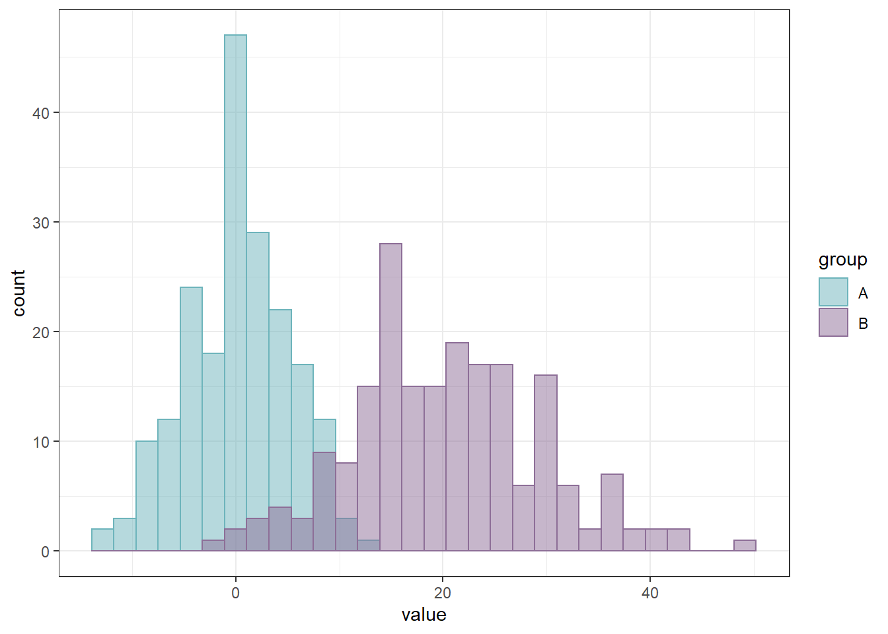
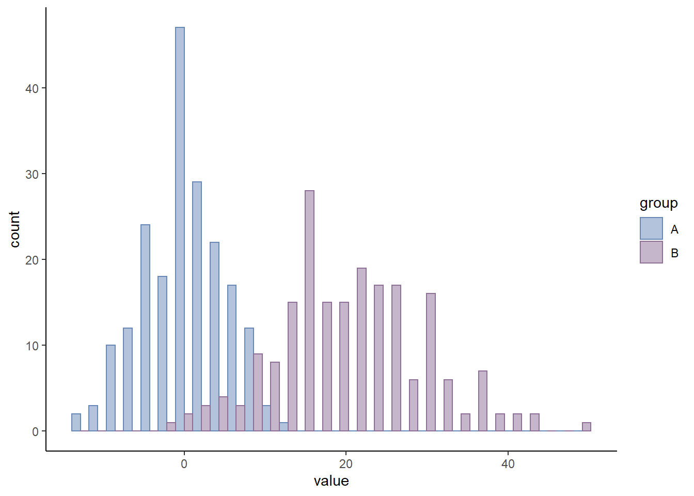
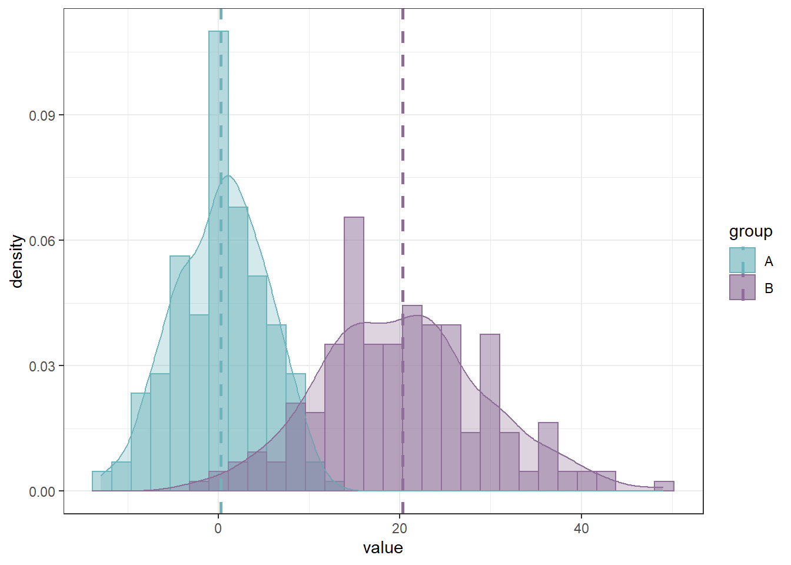

Chapter 1 Histogram
히스토그램(histogram)은 각 구간의 상대도수를 구간의 길이로 나눈 값을 기둥의 높이로 하거나 상대도수 혹은 도수를 직접 기둥의 높이로 표현한다. 상대도수를 구간의 길이로 나눈 값을 밀도라 하고, 상대도수의 합은 1이므로 히스토그램에서 기둥면적의 합은 1이 된다.
1.1 Toy data generation
set.seed(20210113)
hist_data <- data.frame(
group=factor(rep(c("A", "B"), each=200)),
value=round(c(rnorm(200, mean=0, sd=5), rnorm(200, mean=20, sd=10)))
)
head(hist_data)## group value
## 1 A -3
## 2 A 9
## 3 A 1
## 4 A 6
## 5 A -6
## 6 A -51.2 Basic histogram with ggplot2
You can also embed plots, for example:
library(ggplot2)
# Basic histogram
ggplot(hist_data, aes(x=value)) +
geom_histogram()## `stat_bin()` using `bins = 30`. Pick better value with `binwidth`.
1.3 Change the color
# Change the width of bins
ggplot(hist_data, aes(x=value)) +
geom_histogram(fill="#6787B7", colour="black")## `stat_bin()` using `bins = 30`. Pick better value with `binwidth`.
1.4 Change the width of bins
# Change the width of bins
ggplot(hist_data, aes(x=value)) +
geom_histogram(binwidth=5,fill="#6DB4BB", colour="white")
1.5 Add mean line
p <- ggplot(hist_data, aes(x=value)) +
theme_minimal()
p + geom_histogram(binwidth=1,fill="#8D6E97", colour="black") +
geom_vline(aes(xintercept=mean(value)),
color="orange", linetype="dashed", size=1)
1.6 Histogram with density plot
p <- ggplot(hist_data, aes(x=value)) +
theme_minimal()
p + geom_histogram(aes(y=..density..),
binwidth=1,fill="#8D6E97", colour="black") +
geom_density(alpha=0.5, fill="#6DB4BB")
1.7 Histogram with density plot and mean line
p <- ggplot(hist_data, aes(x=value)) +
theme_classic()
p + geom_histogram(aes(y=..density..),
binwidth=3,fill="#6787B7", colour="black") +
geom_density(alpha=0.3, fill="#6DB4BB") +
geom_vline(aes(xintercept=mean(value)),
color="orange", linetype="dashed", size=1)
1.8 Histogram by subgroup with ‘stack’ option
p <- ggplot(hist_data, aes(x=value, fill=group, color=group)) +
theme(legend.position="top")
p + geom_histogram(alpha=0.5, position='stack') +
scale_fill_manual(values=c("#6787B7","#6DB4BB")) +
scale_color_manual(values=c("#6787B7","#6DB4BB"))## `stat_bin()` using `bins = 30`. Pick better value with `binwidth`.
1.9 Histogram by subgroup with ‘identity’ option
p <- ggplot(hist_data, aes(x=value, fill=group, color=group)) +
theme_bw()
p + geom_histogram(alpha=0.5, position='identity') +
scale_fill_manual(values=c("#6DB4BB","#8D6E97")) +
scale_color_manual(values=c("#6DB4BB","#8D6E97"))## `stat_bin()` using `bins = 30`. Pick better value with `binwidth`.
1.10 Histogram by subgroup with ‘dodge’ option
p <- ggplot(hist_data, aes(x=value, fill=group, color=group)) +
theme_classic()
p + geom_histogram(alpha=0.5, position='dodge')+
scale_fill_manual(values=c("#6787B7","#8D6E97")) +
scale_color_manual(values=c("#6787B7","#8D6E97"))## `stat_bin()` using `bins = 30`. Pick better value with `binwidth`.
1.11 Data generation for means by group with ‘dplyr’ package
library(plyr)
mu <- ddply(hist_data, "group", summarise, grp.mean=mean(value))
head(mu)## group grp.mean
## 1 A 0.260
## 2 B 20.2851.12 Histogram by subgroup with density plot and mean line
ggplot(hist_data, aes(x=value, fill=group, color=group)) +
geom_histogram(aes(y=..density..), alpha=0.5, position="identity") +
scale_fill_manual(values=c("#6DB4BB","#8D6E97")) +
scale_color_manual(values=c("#6DB4BB","#8D6E97")) +
geom_density(alpha=0.3) +
geom_vline(data=mu, aes(xintercept=grp.mean, color=group),
linetype="dashed", size=1) +
theme(legend.position="top") +
theme_bw()## `stat_bin()` using `bins = 30`. Pick better value with `binwidth`.
1.13 Data generation of each variables instead of group
data <- data.frame(
var1 = rnorm(1000),
var2 = rnorm(1000, mean=2)
)
head(data)## var1 var2
## 1 1.5066705 0.8726667
## 2 0.9508955 1.7650135
## 3 -1.5555978 2.6735744
## 4 -0.7504949 4.6468663
## 5 -1.8655039 3.0681393
## 6 -0.3830811 1.96892511.14 Histogram with each variables
ggplot(data, aes(x=x) ) +
geom_histogram( aes(x = var1, y = ..density..), fill="#6DB4BB", color="white" ) +
geom_label( aes(x=4.5, y=0.25, label="Group1"), color="#6DB4BB") +
geom_histogram( aes(x = var2, y = -..density..), fill= "#8D6E97", color="white") +
geom_label( aes(x=4.5, y=-0.25, label="Group2"), color="#8D6E97") +
xlab("value of x")## `stat_bin()` using `bins = 30`. Pick better value with `binwidth`.
## `stat_bin()` using `bins = 30`. Pick better value with `binwidth`.